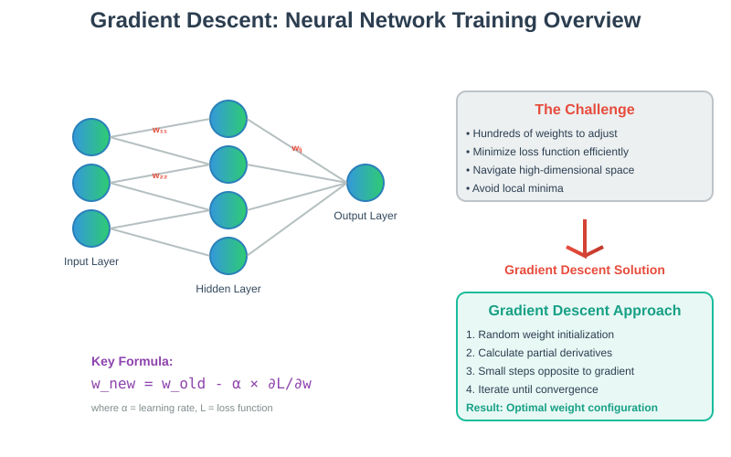
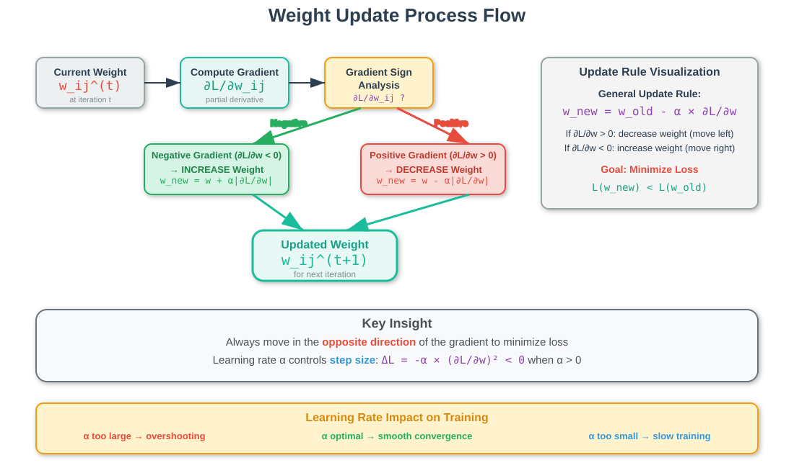
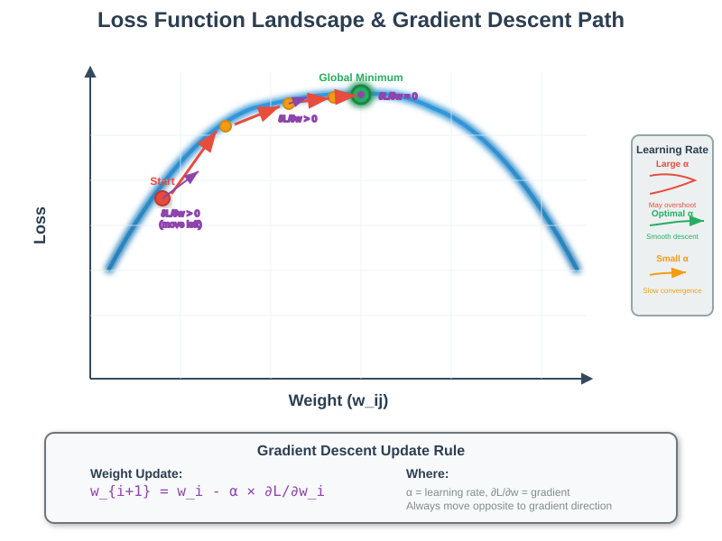
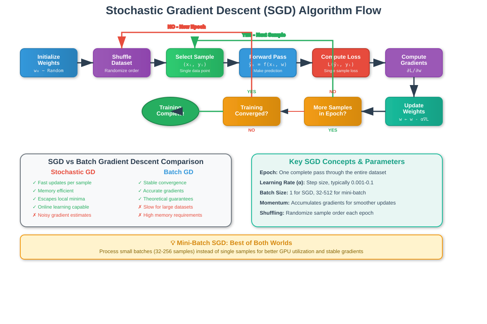

Gradient Descent: The Foundation of Neural Network Training
📋 Quick Navigation
- Introduction
- Weight Initialization
- Mathematical Foundation
- Weight Update Process
- Stochastic Gradient Descent
- Batch Gradient Descent
- Implementation Examples
- Model Comparison
- References & Further Reading
🎯 Introduction
Gradient descent is the cornerstone optimization algorithm that powers neural network training. When dealing with neural networks containing hundreds of units, each with their own weights, the challenge of adjusting these parameters to minimize loss becomes computationally intensive. Gradient descent provides an elegant solution by taking small, calculated steps toward the optimal solution.

The algorithm works by: - Starting with random weight initialization - Computing gradients (partial derivatives) for each weight - Making small adjustments in the direction that reduces loss - Iterating until convergence
⚡ Weight Initialization
Weight initialization is the critical first step in training any neural network. It involves assigning small random values to all network parameters before training begins.
Why Random Initialization?
- Symmetry Breaking: Prevents all neurons from learning identical features
- Gradient Flow: Ensures proper gradient propagation during backpropagation
- Convergence Speed: Well-initialized networks train faster and more reliably
Common Initialization Strategies
| Method | Formula | Best For |
|---|---|---|
| Xavier/Glorot | √(6/(n_in + n_out)) |
Sigmoid/Tanh activation |
| He Initialization | √(2/n_in) |
ReLU activation |
| LeCun | √(1/n_in) |
SELU activation |
# Example: He initialization for ReLU networks
import numpy as np
def he_initialization(n_in, n_out):
return np.random.randn(n_in, n_out) * np.sqrt(2.0 / n_in)
🧮 Mathematical Foundation
The core of gradient descent lies in understanding how small changes in weights affect the overall loss function.
Partial Derivatives
For each weight w_ij connecting neuron i to neuron j, we compute:
∂L/∂w_ij = partial derivative of loss with respect to weight w_ij
This tells us: - Direction: Whether to increase or decrease the weight - Magnitude: How sensitive the loss is to this weight
Weight Update Rule
The fundamental update equation:
w_ij^(t+1) = w_ij^(t) - α × (∂L/∂w_ij)
Where:
- w_ij^(t) = current weight at iteration t
- α = learning rate (step size)
- ∂L/∂w_ij = partial derivative of loss w.r.t. weight

Key Insight
- Positive gradient → Decrease weight (move opposite to gradient)
- Negative gradient → Increase weight (move opposite to gradient)
This ensures we always move toward lower loss values.
📈 Weight Update Process
The weight update process follows a systematic approach to minimize the loss function.
The Algorithm Steps
- Compute Forward Pass: Calculate predictions using current weights
- Calculate Loss: Measure prediction error
- Compute Gradients: Calculate ∂L/∂w for all weights
- Update Weights: Apply the update rule
- Repeat: Continue until convergence

Learning Rate Selection
The learning rate α is crucial:
- Too large: Algorithm may overshoot minimum
- Too small: Slow convergence
- Adaptive methods: Adam, RMSprop adjust learning rate automatically
# Example learning rate schedules
def exponential_decay(initial_lr, decay_rate, step):
return initial_lr * (decay_rate ** step)
def cosine_annealing(initial_lr, current_step, total_steps):
return initial_lr * 0.5 * (1 + np.cos(np.pi * current_step / total_steps))
🎲 Stochastic Gradient Descent
Stochastic Gradient Descent (SGD) addresses the computational challenge of processing large datasets by updating weights based on individual data points rather than the entire dataset.
Key Advantages
- Computational Efficiency: Updates weights after each sample
- Faster Convergence: More frequent updates lead to quicker training
- Memory Efficient: Processes one sample at a time
- Noise Benefits: Random sampling helps escape local minima
Algorithm Process
def sgd_step(X, y, weights, learning_rate):
"""Single SGD update step"""
# Random sample selection
idx = np.random.randint(0, len(X))
x_sample, y_sample = X[idx], y[idx]
# Compute prediction and loss for single sample
prediction = forward_pass(x_sample, weights)
loss = compute_loss(prediction, y_sample)
# Compute gradients for single sample
gradients = compute_gradients(x_sample, y_sample, weights)
# Update all weights
weights = weights - learning_rate * gradients
return weights
Epoch Structure
- Shuffle: Randomize data order
- Iterate: Process each sample once
- Repeat: Start new epoch with reshuffled data

📦 Batch Gradient Descent
Batch SGD strikes a balance between computational efficiency and gradient accuracy by processing small groups of data points simultaneously.
Batch Size Considerations
| Batch Size | Memory Usage | Gradient Noise | Convergence Speed |
|---|---|---|---|
| 1 (SGD) | Low | High | Fast but noisy |
| 32-128 | Moderate | Moderate | Balanced |
| Full Dataset | High | Low | Smooth but slow |
Mini-Batch Algorithm
def mini_batch_sgd(X, y, weights, learning_rate, batch_size=32):
"""Mini-batch SGD implementation"""
n_samples = len(X)
for epoch in range(num_epochs):
# Shuffle data
indices = np.random.permutation(n_samples)
X_shuffled = X[indices]
y_shuffled = y[indices]
# Process mini-batches
for i in range(0, n_samples, batch_size):
batch_X = X_shuffled[i:i+batch_size]
batch_y = y_shuffled[i:i+batch_size]
# Compute gradients for batch
gradients = compute_batch_gradients(batch_X, batch_y, weights)
# Update weights
weights = weights - learning_rate * gradients
return weights
Benefits of Mini-Batching
- Vectorization: Efficient GPU/CPU utilization
- Gradient Stability: Reduced noise compared to SGD
- Memory Management: Controlled memory usage
- Parallel Processing: Better hardware utilization
💻 Implementation Examples
🔗 Google Colab Integration

Complete PyTorch Implementation
import torch
import torch.nn as nn
import torch.optim as optim
import numpy as np
import matplotlib.pyplot as plt
class SimpleNetwork(nn.Module):
def __init__(self, input_size, hidden_size, output_size):
super(SimpleNetwork, self).__init__()
self.layer1 = nn.Linear(input_size, hidden_size)
self.layer2 = nn.Linear(hidden_size, output_size)
self.relu = nn.ReLU()
def forward(self, x):
x = self.relu(self.layer1(x))
x = self.layer2(x)
return x
# Initialize model
model = SimpleNetwork(input_size=10, hidden_size=64, output_size=1)
# Define optimizer and loss
optimizer = optim.SGD(model.parameters(), lr=0.01, momentum=0.9)
criterion = nn.MSELoss()
# Training loop
for epoch in range(100):
optimizer.zero_grad()
outputs = model(X_train)
loss = criterion(outputs, y_train)
loss.backward()
optimizer.step()
if epoch % 10 == 0:
print(f'Epoch [{epoch}/100], Loss: {loss.item():.4f}')
Hugging Face Integration
from transformers import AutoModel, AutoTokenizer, AdamW
# Load pre-trained model
model = AutoModel.from_pretrained("bert-base-uncased")
tokenizer = AutoTokenizer.from_pretrained("bert-base-uncased")
# Setup optimizer with different learning rates
optimizer = AdamW([
{'params': model.bert.parameters(), 'lr': 2e-5},
{'params': model.classifier.parameters(), 'lr': 1e-4}
])
🤗 Recommended Models
- BERT-base-uncased: Foundation transformer model
- GPT-2: Autoregressive language model
- RoBERTa: Robustly optimized BERT
⚖️ Model Comparison
Gradient Descent Variants
| Algorithm | Memory Usage | Convergence Speed | Gradient Noise | Best Use Case |
|---|---|---|---|---|
| Batch GD | High | Slow | Low | Small datasets |
| SGD | Low | Fast | High | Large datasets |
| Mini-Batch SGD | Moderate | Moderate | Moderate | General purpose |
| Adam | Moderate | Fast | Adaptive | Deep learning |
| RMSprop | Moderate | Fast | Adaptive | RNNs |
Optimizer Performance
# Comparison of different optimizers
optimizers = {
'SGD': optim.SGD(model.parameters(), lr=0.01),
'Adam': optim.Adam(model.parameters(), lr=0.001),
'RMSprop': optim.RMSprop(model.parameters(), lr=0.01),
'AdamW': optim.AdamW(model.parameters(), lr=0.001, weight_decay=0.01)
}
📚 References & Further Reading
📄 Academic Papers
- Gradient-Based Learning Applied to Document Recognition - LeCun et al.
- Adam: A Method for Stochastic Optimization - Kingma & Ba
- On the Convergence of Adam and Beyond - Reddi et al.
- Large Batch Training of Convolutional Networks - Goyal et al.
📖 Books & Resources
- Deep Learning by Ian Goodfellow - Chapter 4: Numerical Computation
- Pattern Recognition and Machine Learning by Christopher Bishop
- Neural Networks for Pattern Recognition by Christopher M. Bishop
- CS231n: Convolutional Neural Networks - Stanford Course
🛠️ Tools & Frameworks
- PyTorch Optimization - Official PyTorch optimizers
- TensorFlow Optimizers - TF optimization guide
- Weights & Biases - Experiment tracking for hyperparameter tuning
This documentation provides a comprehensive guide to gradient descent algorithms. For hands-on experience, try the Colab notebooks and experiment with different optimizers on your datasets.